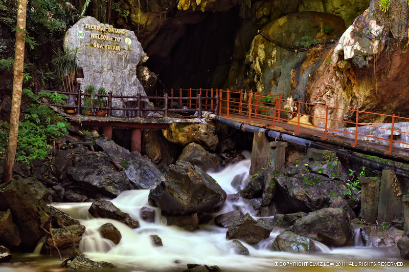
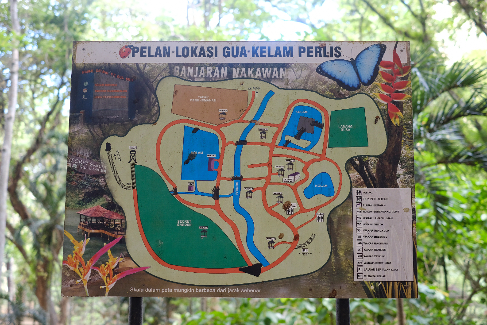
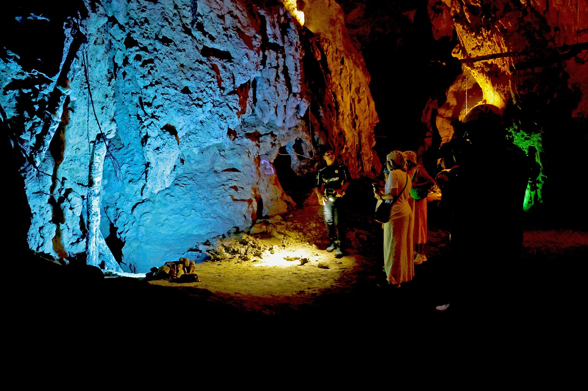

Gua Kelam: The Hidden Cave of Perlis
Gua Kelam, also known as the Cave of Darkness, is a popular limestone cave in Perlis known for its unique walkway that runs through the cave’s narrow passage. Once used by tin miners, it now offers visitors a scenic and adventurous experience, with dramatic rock formations, a cool stream, and a peaceful jungle trail at the end. It's a perfect blend of history, nature, and exploration.
Nestled in the serene town of Kaki Bukit in Perlis, Gua Kelam (which translates to “Cave of Darkness”) is one of Malaysia’s most unique limestone caves. This natural wonder is renowned for its narrow, mystical tunnel that stretches approximately 370 meters through limestone hills, once used as a passage by tin miners transporting ore from Wan Tangga Valley. Today, it offers visitors a surreal journey through dimly lit paths, wooden walkways, and echoing chambers surrounded by stalactites and stalagmites.
One of the highlights of visiting Gua Kelam is the walkway suspended over an underground river, where you can hear the gentle sound of flowing water as you explore the cave’s cool, mysterious interior. Colorful lighting enhances the natural textures of the cave walls, creating a mesmerizing experience. Along the way, interpretive signs provide insights into the cave’s mining history, geological features, and local folklore, making it both educational and adventurous.
Beyond its geological beauty, Gua Kelam is surrounded by lush greenery and a tranquil park area where families can relax after exploring the cave. It’s a favorite spot among nature lovers, photographers, and casual hikers. Whether you're in search of a bit of history, nature, or just an escape from the heat, Gua Kelam offers a unique and memorable underground experience in one of Malaysia’s smallest yet most charming states.
